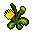

Yellow flower
| Yellow flower | |
|---|---|
 | |
General Information
| |
Type :
|
Foragable Plant |
Stack size:
|
30 |
Consumable Information
| |
Effects :
|
+ |
Source(s)
| |
| Foraging | |
Study Information
| |
Study reward:
|
|
Decomposition Products
| |
| Life solution Life extract | |
Technical Information
| |
Internal name:
|
flw_dandelion |

Yellow flowers are a forageable item found in most outdoor areas. It does not require any technologies to collect. After unlocking the Insects technology of the Farming and Nature tech tree, collecting Yellow Flowers may also yield Butterflies during the day or Moths at night.
Study
| Study table | |||
|---|---|---|---|
| Tech Points | Resources Required | Energy | Notes |
| 1× Faith 1× Science |
- |
Decomposes into: liquid and essence | |
Alchemy
yellow flower is decomposable into solution and extract with the hand mixer and any of the distillation cubes, respectively. Having unlocked the Master of Alchemy produces one additional reagent at any workstation.
| Hand mixer | |
|---|---|
| Item Produced | Materials Required |
| 1× Life solution |
1× Yellow flower |
| Distillation cube | |
| Item Produced | Materials Required |
| 1× Life extract |
1× Yellow flower |
| Distillation cube II | |
| Item Produced | Materials Required |
| 2× Life extract |
1× Yellow flower |
| ||||||||||||||